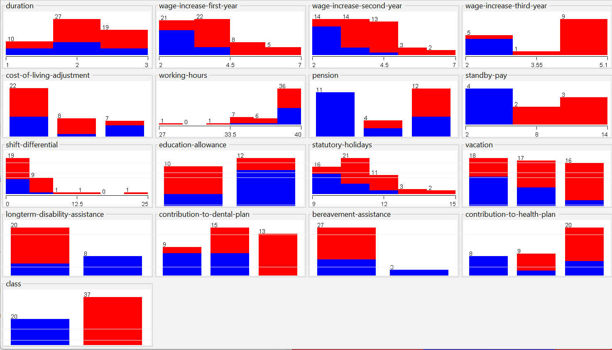

- Spatial Analysis for Surface Modelling
- The goal of this project is to interpolate a surface of earthquake intensity resulting from the magnitude 9.0 earthquake that struck a region close to Japan's coast on March 11, 2011, utilizing interpolation techniques.

- Data Mining for labor negotiations in Canadian Industry
- The study endeavors to achieve accurate classification of instances by using the dataset attributes, ultimately striving for a high-performing classifier that ensures a balanced classification of precision, recall, and accuracy. The google colab. python environment was used for this project.

- Project 3
- De